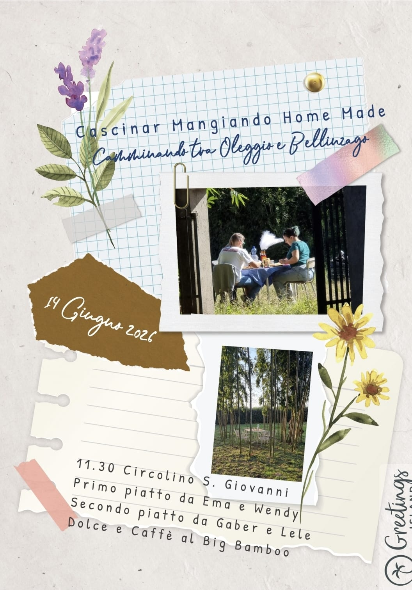

Cascinar Mangiando Home Made
Camminando tra Oleggio e Bellinzago

🌿 14 Giugno 2026 🌿
1
Circolo San Giovanni, Oleggio
Aperitivo libero
Da bere... a piacere!
2
Da Ema e Wendy
Lasagne
Vino rosso
3
Da Gaber e Lele
Polpette fritte e in umido, con purè e carote alla paprika
Vino rosso
4
Big Bamboo
Torta caprese
Caffè e ammazzacaffè
📍 Programma e percorso
🎫 La mia tessera